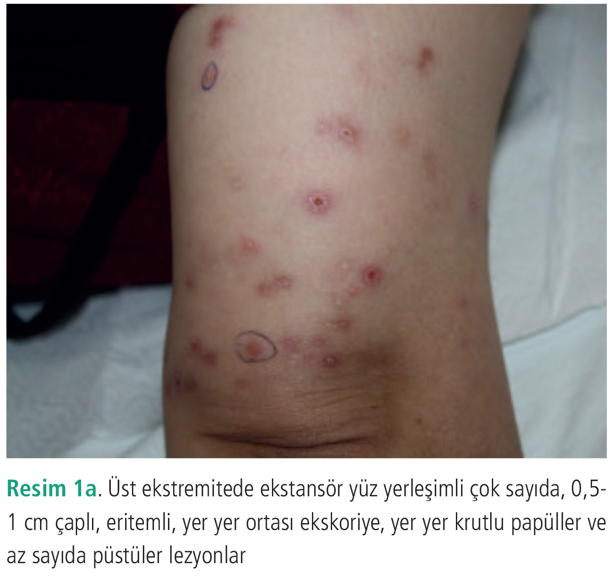
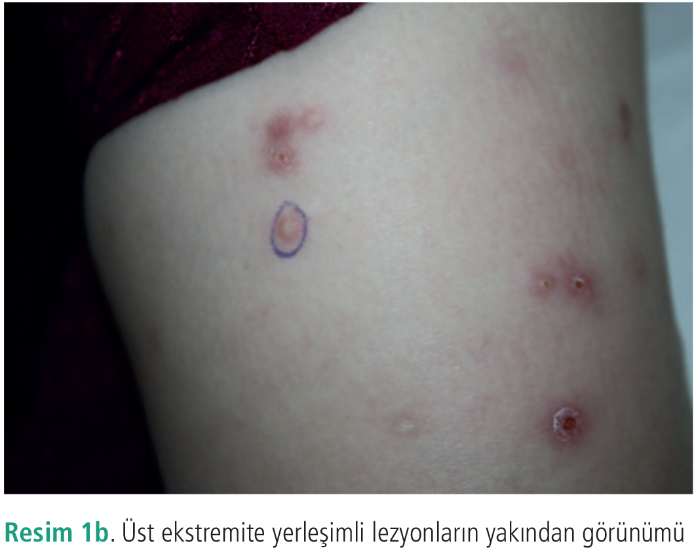
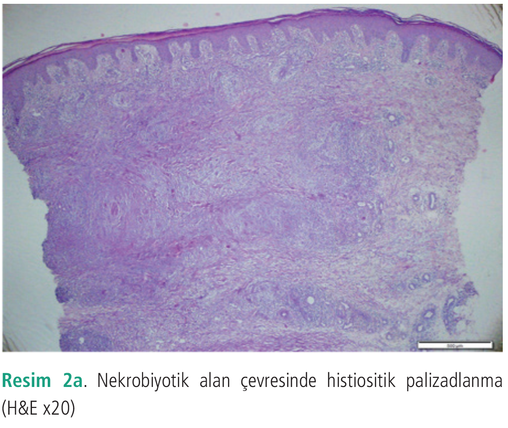
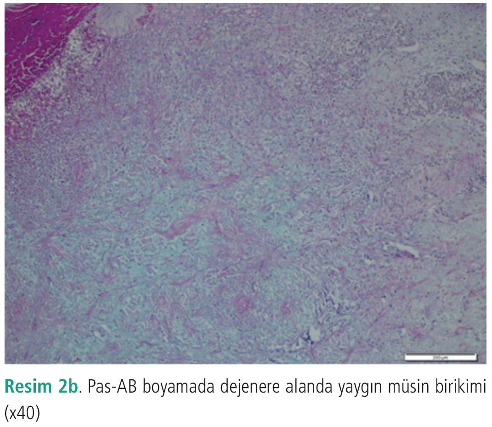
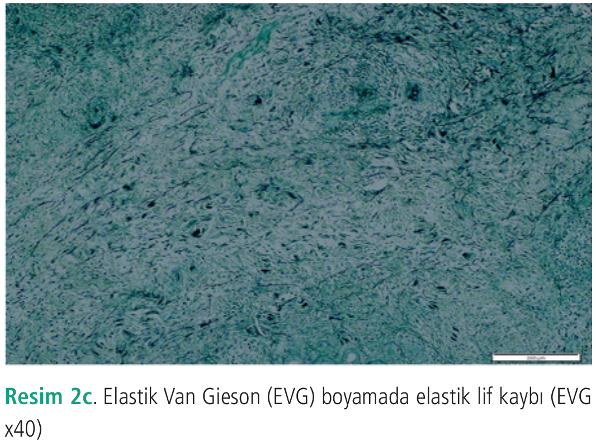

Olgu Sunumu
Perforan Granüloma Annülare: Olgu Sunumu
1 İstanbul Medeniyet Üniversitesi Tıp Fakültesi, Deri ve Zührevi Hastalıkları Anabilim Dalı, İstanbul, Türkiye
2 İstanbul Medeniyet Üniversitesi Tıp Fakültesi, Patoloji Anabilim Dalı, İstanbul, Türkiye
3 Sağlık Bilimleri Üniversitesi, Fatih Sultan Mehmet Eğitim ve Araştırma Hastanesi, Deri ve Zührevi Hastalıkları Kliniği, İstanbul, Türkiye
Anahtar Kelimeler: Granüloma annülareenflamatuvar deri hastalığıizotretinoinperforan granüloma anülarepruritus
Keywords: Granuloma annulareinflammatory skin diseaseisotretinoinperforating granuloma annularepruritus
Geliş: 22.02.2020Kabul: 29.03.2020Yayın: 24.12.2020
s. 21-23
Özet
ÖZET
Granüloma anülare, nedeni tam olarak bilinmeyen, travma, böcek ısırığı, güneş maruziyeti ve tüberküloz gibi çeşitli faktörlerle tetiklenebilen granülomatöz ve enflamatuvar bir deri hastalığıdır. Hastalığın klinik olarak lokalize, jeneralize, subkütan, maküler ve perforan alt tipleri mevcuttur. Perforan granüloma anülare oldukça nadir görülen ve ekstremite yerleşimli, göbekli, krutlu veya fokal ülserasyonların izlenebildiği küçük papüllerle karakterize bir alt tiptir. Bu klinik tip birçok deri hastalığıyla karışabilmekte, genellikle farklı ön tanılarla tedavi edilmekte, ancak kesin tanısı histopatolojik olarak konulabilmektedir. Bu olguyu perforan granüloma anülarenin nadir görülmesi nedeniyle bunun yanı sıra tedavisinde sistemik izotretinoinin etkinliğini vurgulamak amacıyla sunmak istiyoruz.
Tam Metin
Giriş
Granüloma anülare nedeni tam olarak bilinmeyen, travma, böcek ısırığı, güneş maruziyeti ve tüberküloz gibi çeşitli faktörlerle tetiklenebilen, granülomatöz ve enflamatuvar karakterde bir deri hastalığıdır. Hastalığın lokalize, jeneralize, subkütan, maküler ve perforan gibi çeşitli alt tipleri mevcuttur.
Perforan tip granüloma anülare oldukça nadir görülen ve ekstremitelerde göbekli, krutlu veya fokal ülserasyonların görülebildiği küçük papüllerle karakterize bir alt tiptir. Bu klinik varyant birçok deri hastalığıyla karışabilmekte, genellikle farklı ön tanılarla tedavi edilmektedir. Kesin tanısı ise histopatolojik olarak konulabilmektedir.
Olgu Sunumu
Kırk altı yaşında kadın hasta kliniğimize 1 yıldır kollarda kaşıntılı, sivilce şeklinde başlayıp zamanla sertleşen kabarmalar şikayetiyle başvurdu. (Resim 1a, b) Özgeçmişinde belirgin özellik bulunmayan hastanın soygeçmişinde de belirgin özellik bulunmamaktaydı.
Dermatolojik muayenesinde her iki üst ekstremitede ekstansör yüz yerleşimi ve alt ekstremitelerde fleksör yüz yerleşimli çok sayıda, 0,5-1 cm çaplı, eritemli, yer yer ortası ekskoriye, yer yer krutlu papüller ve az sayıda püstüler lezyonlar mevcuttu. Hastamızın daha önce başvurduğu merkezlerde almış olduğu tedavilerden sonra lezyonları kısmen hafiflemiş ancak tam olarak gerilememişti, tedaviye ara verdikten sonra lezyonlarının tekrarladığını belirtmesi üzerine hem papüler, hem de püstüler lezyonlardan iki adet punch biyopsi yapıldı. Alınan biyopsilerde dermal nekrobiyozis, çevresinde seyrek histiyositler (CD68) ve müsin birikimi (PAS-AB) izlendi. (Resim 2a, b, c) elastik Van Gieson boyamada nekrobiyotik alanlarda lif kaybı mevcuttu. Bu klinik ve histopatolojik bulgularla hastamız perforan granüloma anülare olarak kabul edildi. Hastamızın granüloma anülareye eşlik edebilecek sistemik hastalıklar açısından yapılan laboratuvar incelemelerinde patolojiye rastlanmadı. Hepatit belirteçleri normaldi. Hastaya sistemik 30 mg/gün izotretinoin ve lokal %10 üre losyon başlandı. Tedaviye başladıktan sonra 2 ay içinde lezyonlarında belirgin gerileme izlendi. Sistemik izotretinoin tedavisinin 5. ayında lezyonlarda tam remisyon izlendi ve tedavi sonrası 8 aylık klinik izlemde rekürrens gözlenmedi.
Tartışma
Perforan granüloma anülare, oldukça nadir görülen, kronik seyirli ve nedeni henüz tam olarak bilinmeyen enflamatuvar bir deri hastalığıdır. Granüloma anülarenin bu nadir alt tipinin etiyopatogenezde böcek ısırıkları, travma, ultraviyole, viral enfeksiyonlar, diyabet ve tiroiditin rol oynadığı düşünülmektedir. Mukoid materyalin perforasyonu sonucu santral kısmında krutlanma görülebilmektedir (1-4). Klinik görünümlerine göre lezyonlar perforan (P tipi) veya ülseratif tip (U tipi) olmak üzere iki gruba ayrılmıştır. Literatürdeki çalışmalarda perforan tipin görülme yaşının daha erken olduğu ve kadın cinsiyette daha sık olduğu bildirilmiştir. Perforan tipte lezyonlar, hastamızda da olduğu gibi, sıklıkla ekstremite dorsallerinde yerleşmiş, eritemli, 1-7 mm çaplı, ortası göbekli ve küçük krutla kaplı papüler lezyonlar şeklinde görülmektedir (5). Dissemine tip daha nadir görülmekle birlikte, genellikle gövde tutulumu olmaksızın ekstremitelerde yaygın tutulum görülmektedir. Dissemine perforan granüloma anülare tüm granüloma anülare olgularının sadece %5’ini oluşturmaktadır (3). Perforan granüloma anülare lezyonları klinik olarak papulonekrotik tüberkülid, nörotik ekskoriasyon, sarkoidoz, mikozis fungoides, insect bite, ilaç erüpsiyonu gibi çok sayıda hastalıkla karışabilmektedir. Kesin tanısı histopatolojik olarak konulmaktadır (4-6).
Hastalığın tedavisinde lezyonların yaygınlığına göre lokal ve sistemik tedaviler kullanılabilmektedir. Topikal tedaviler içerisinde kortikosteroidler, takrolimus, pimekrolimus ve vitamin E kullanılabilir. Sistemik tedavide ise dapson, retinoidler, antimalaryaller, pentoksifilin, dipiridamol, nikotinamid ve infliksimab kullanılabilmektedir (1-5). Fototerapi ile başarılı sonuç alınan olgu bildirileri de mevcuttur, ancak bu konuda geniş bir çalışma yapılmamıştır. Olgumuzda literatürde çok az sayıda olguda kullanılmış olan izotretinoin tedavisi 0,3 mg/kg/gün dozda başlandı ve 2 ay içerisinde dramatik bir yanıt alındı. Beşinci ayda kaşıntı şikayeti tamamen gerileyen olgunun tedavi sonrası 8 aylık izleminde yeni lezyon çıkışı olmadı.
Nadir görülen bir granüloma anülare varyantı olan dissemine perforan granüloma anülarede izotretinoin tedavisinin oldukça etkili bir tedavi seçeneği olarak görünmektedir.





Kaynaklar
1.Pereira AR, Vieira MB, Monteiro MP, et al. Perforating granuloma annulare mimicking papulonecrotic tuberculid. An Bras Dermatol 2013; 88(6 Suppl 1): 101-104.
2.Devesa Parente JA, Dores JAM, Aranha JMP. Generalized perforating granuloma annulare: case report. Acta Dermatovenerol Croat 2012; 20: 260-262.
3.Dornelles SI, Poziomczyk CS, Boff A, et al. Generalized perforating granuloma annulare. An Bras Dermatol 2011; 86: 327-331.
4.Ratnavel RC, Norris PG. Perforating granuloma annulare: response to treatment with isotretinoin. J Am Acad Dermatol 1995; 32: 126-127.
5.Zhong W, Shao Y, Ye T, Li J, Yu B, Dou X. Perforating granuloma annulare: a case report and literature review. J Eur Acad Dermatol Venereol 2016; 30: 1246-1247.
6.Santos R, Afonso A, Cunha F, et al. Generalized perforating granuloma annulare. J Eur Acad Dermatol Venereol 1999; 13: 62-63.